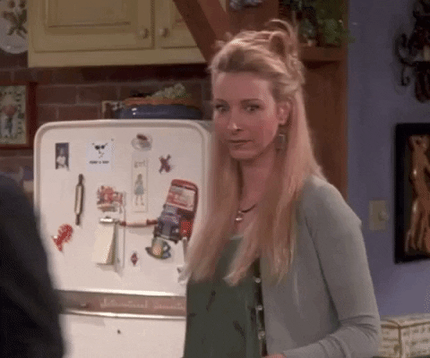
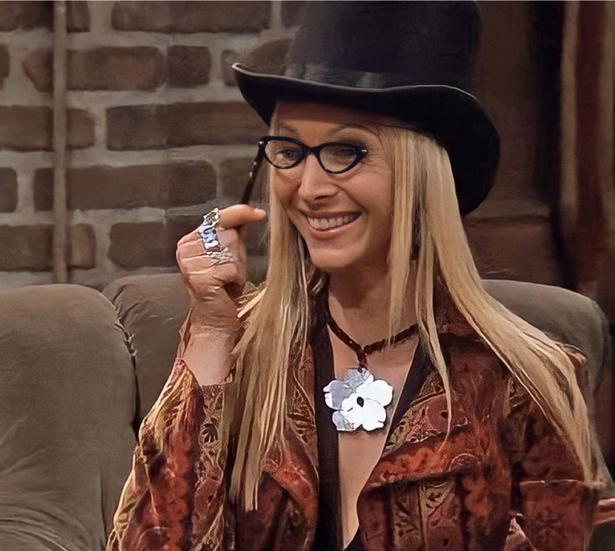
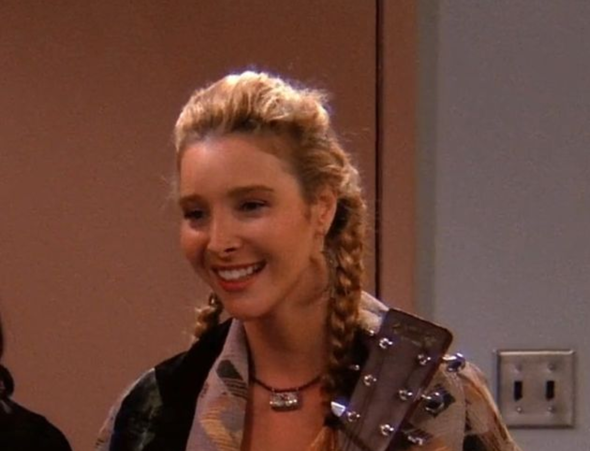
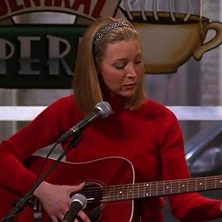
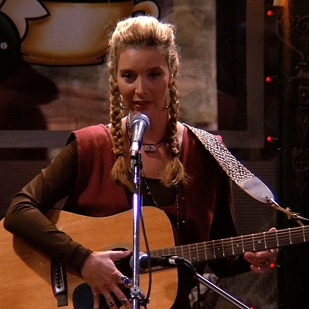
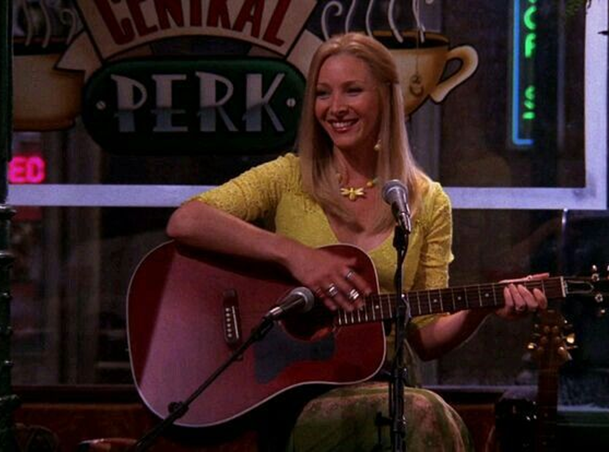
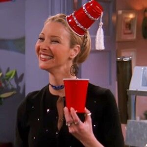
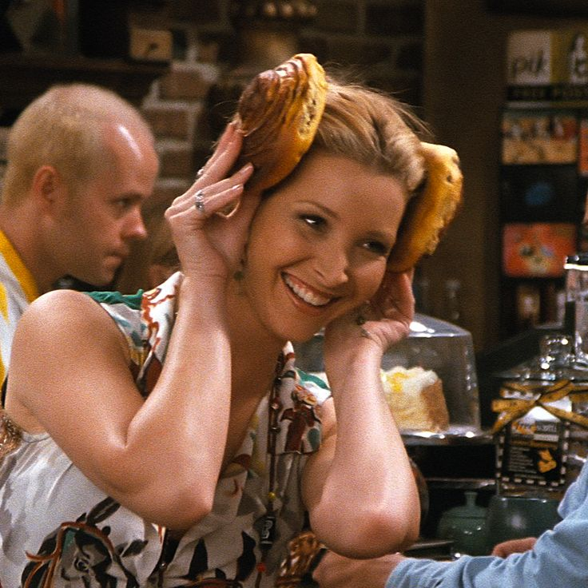

www.phoebe.com


Smelly Cat, Smelly Cat,
What are they feeding you?
Smelly Cat, Smelly Cat,
It's not your fault.
They won't take you to the vet,
You're obviously not their favorite pet.
You may not be a bed of roses,
And you're no friend to those with noses.
Smelly Cat, Smelly Cat,
What are they feeding you?
Smelly Cat, Smelly Cat,
It's not your fault.

Smelly Cat
‘Smelly Cat’ isn’t just a joke — it’s Phoebe’s life in a song. Like the unloved cat the world avoids, she sings for those who feel out of place, the misfits, and the quietly overlooked. Behind her quirky humor, eccentric habits, and offbeat charm lies a simple but powerful truth: embrace who you are, love yourself even if the world thinks you’re a little strange, and keep singing your own song no matter what. Phoebe reminds us that uniqueness is a gift, and sometimes the weirdest melodies carry the deepest heart.


Her World of Chaos and Kindness


Born from chaos but filled with warmth, Phoebe is the soul of the group. She sings ‘Smelly Cat,’ calls herself ‘Regina Phalange,’ and somehow makes the world a little lighter with her humor, music, and unapologetic weirdness. Her past may have been rough, and her world far from ordinary, but every eccentric habit and quirky joke carries honesty, courage, and love. Phoebe’s life is a reminder that being different isn’t a flaw — it’s a gift, and living authentically is the most magical thing of all.
Phoebe's


In this post, Phoebe proudly documents her devotion to her vegetarian lifestyle—a commitment she treats not as a diet, but as a cosmic agreement with the universe. Holding her vegan meal while taking a mirror selfie, she insists the Earth “vibrates differently” whenever she eats plants. This image demonstrates the whimsical blend of activism and self-expression that defines her online presence: part environmental celebration, part Phoebe-style performance art.
This photograph, taken by Joey, documents Phoebe’s unexpectedly wholesome moment of riding the bicycle gifted by Ross. Although the bike was meant to be a simple present, Phoebe describes it as the beginning of a “mini spiritual journey on wheels.” Joey, meanwhile, treats the moment as an artistic assignment, insisting he was “capturing her freedom.” Together, the result is a uniquely Friends-esque scene: a spontaneous collaboration between friends, fueled by sincerity, chaos, and a surprising amount of enthusiasm.
This image captures Phoebe in her most unfiltered morning state—armed with an iced Americano and the kind of sleepy confidence only she could possess. She stands before her mirror not simply to take a selfie, but to consult what she calls her “morning oracle.” According to Phoebe, the mirror occasionally offers unsolicited advice about her aura and caffeine levels. Here, we witness the beginning of her day: slightly chaotic, accidentally poetic, and unmistakably Phoebe.
If Phoebe had Instagram, her feed wouldn’t be perfect — it would be perfectly chaotic. No filters, just feelings. Guitars, stray cats, crystals, and random strangers would fill her grid like a scrapbook of her wonderfully unpredictable life. Some posts would be blurry, some would be oddly profound, and some would make absolutely no sense — but together, they’d be a magical, messy, beautifully human reflection of everything that makes Phoebe… Phoebe.
-
Eccen
tricityEccen

tricityQuirky, unpredictable, and wonderfully strange — Phoebe turns every odd thought into poetry. Her eccentricity isn’t a flaw; it’s her art. A reminder that being different is exactly what makes you unforgettable.
-
Phalange
Phalange
“Phalange” is Phoebe’s go-to alias — a completely made-up name she deploys with total confidence to confuse, distract, or save the day. Whether she’s pretending to be “Regina Phalange” at the airport or insisting that planes can’t take off without a “left phalange,” her nonsense somehow works every single time — because she believes it.

-
Hip
pieHip

piePhoebe lives by her own rhythm — a blend of vintage guitars, herbal tea, and unapologetic freedom. She’s the soul of the group, teaching everyone that peace, love, and a little weirdness can go a long way.
Tonight’s Setlist
Tonight’s setlist is a beautifully chaotic mix of Phoebe Buffay’s greatest emotional revelations. Some songs were written in a café, some in a bathroom, and at least one during a very confusing dream. Expect unexpected lyrics, questionable rhymes, and moments of accidental wisdom — all delivered with Phoebe’s unmatched, magical sincerity.

-
Smelly Cat
A heartfelt anthem for misunderstood creatures everywhere. It’s not about the smell — it’s about society’s failure to love what isn’t perfect.
-
Sticky Shoes
Inspired by the day her shoes betrayed her by sticking to the floor. A poetic reminder that even footwear can’t be trusted.
-
The Grandma Song
A touching, slightly strange tribute to a grandmother who may or may not have been a secret agent. No one knows. Phoebe included.
-
Two of Them Kissed Last Night
A dramatic ballad capturing the chaos of unexpected romance. Equal parts gossip, heartbreak, and accidental poetry.
-
Ode to a Pubic Hair
A bold artistic piece that was immediately banned from Central Perk. Too honest, too real, and apparently too inappropriate.
-
New Material I Made Up in the Bathroom
A spontaneous masterpiece born between a sink and a mirror. No one knows the lyrics — not even Phoebe — because she forgets them instantly.
-  
- 
-

-

At the end of it all, Phoebe Buffay remains the wild, warm light of the group — strange in the most beautiful way. Her songs, her quirks, her fierce kindness stay long after the page ends. With Phoebe around, the world is always just a little weirder… and a lot more wonderful.
-

- 